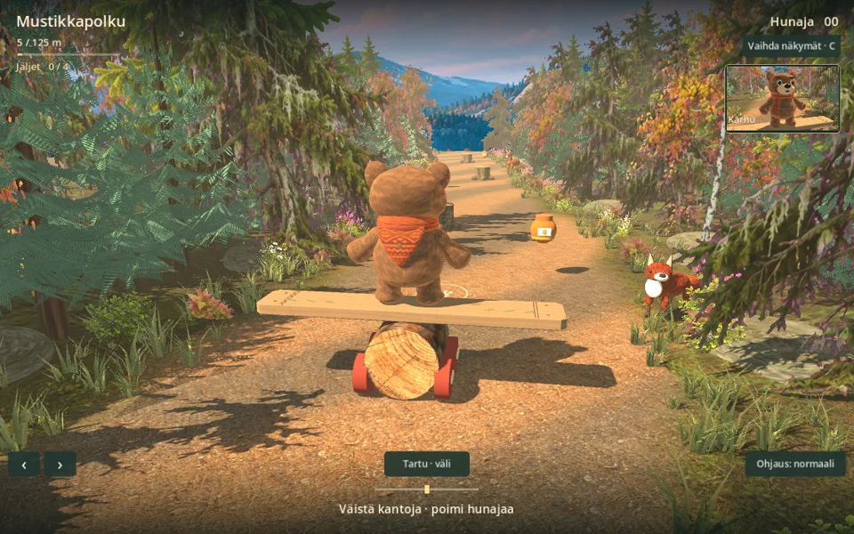

Wobble Bear
Five free trails. Choose your woodland adventure.

Forest Friends
Dodge falling cargo in Rockfall Pass or follow golden swarms through Firefly Grove.
Play Forest Friends
Brookside
Follow the green arrows into the woods with Bear, then ride back to the trail. Streams, timber bridges and ducks line the way.
Play Brookside